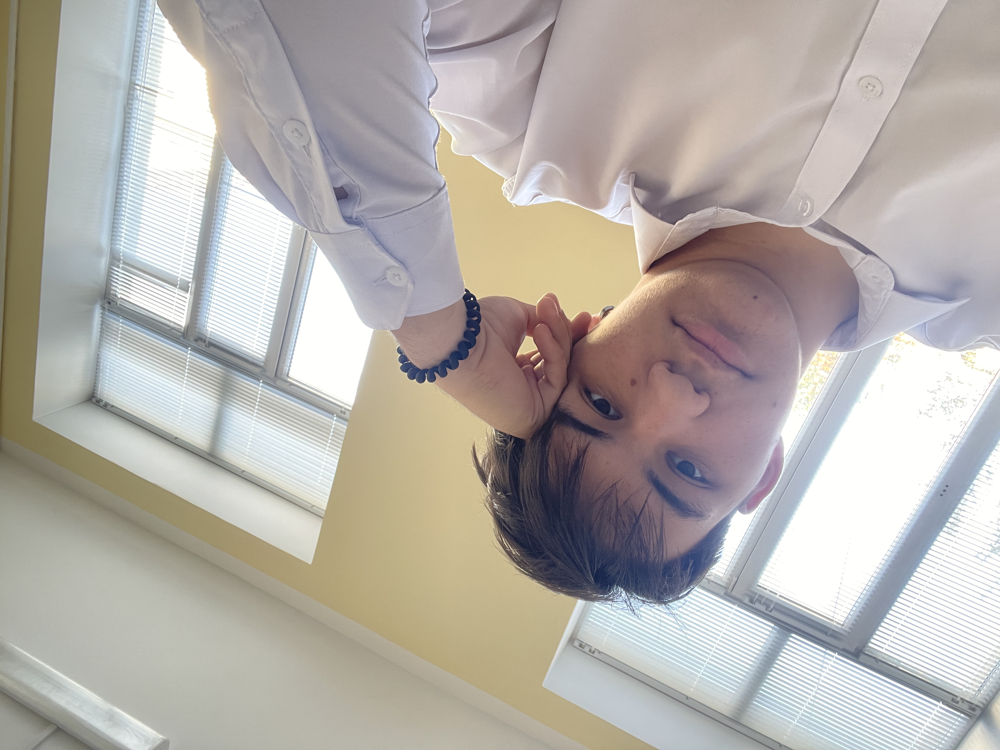
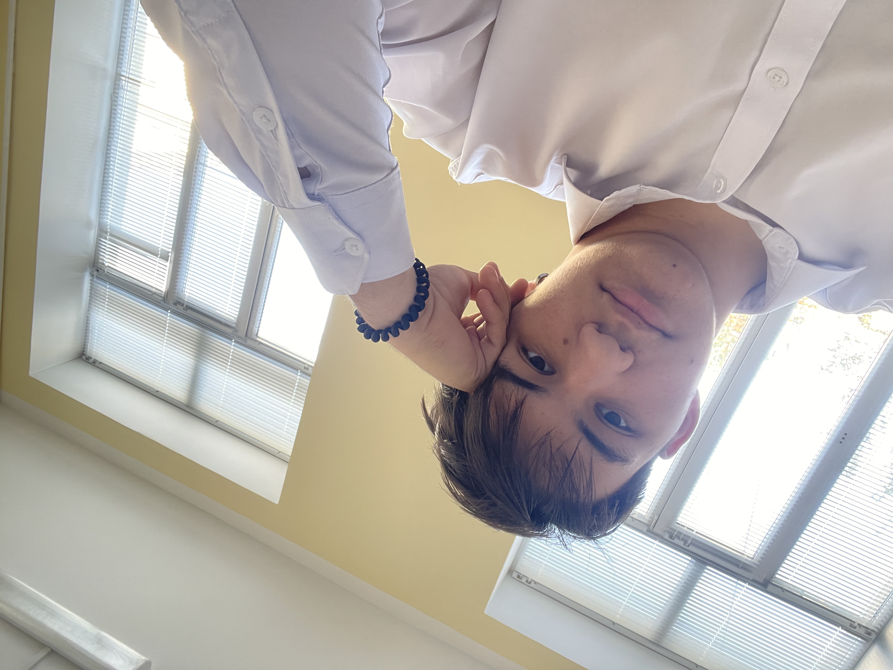
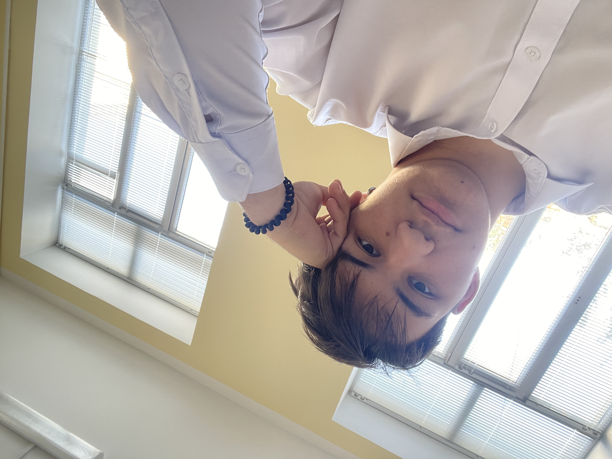

Добро пожаловать!
Привет! Я Семён Стариков, увлечён программированием и учусь в 11 классе Проектной школы. Играю на гитаре, мне 17 лет.
«Я воин и смогу отоспаться только после смерти»
 



Привет! Я Семён Стариков, увлечён программированием и учусь в 11 классе Проектной школы. Играю на гитаре, мне 17 лет.
«Я воин и смогу отоспаться только после смерти»
